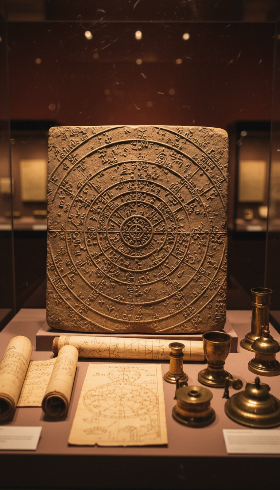

The Book of Enoch Chapter 6 lists two hundred angels who descended on Mount Hermon. Chapter 8 gives each of them a job. Kokabel's job was the stars. Every constellation above you tonight has his name on it.
This is not mythology. The Book of Enoch predates the New Testament by at least two centuries. Dead Sea Scroll fragments found at Qumran Cave 1 in 1947 contained Aramaic sections of the text. The Ethiopian Orthodox Tewahedo Canon has carried the complete version in Ge'ez since at least the fourth century AD. The Council of Nicaea voted it out in 325 AD. What Nicaea removed, Ethiopia kept. And what Ethiopia kept names Kokabel.

Chapter 8. Verse 3. His Name Is There.
1 Enoch Chapter 8 Verse 3 reads: "And Kokabel taught the portents of the stars." The verse does not say he taught astrology as a soft art. Portents means predictive markers. Kokabel transferred a technical system. Astronomical timekeeping. Star identification. The link between celestial movement and terrestrial events. Every observatory operating today stands at the end of that chain.
He was not alone. Chapter 8 names the full faculty by assignment. Azazel took metalworking. Verse 1 states he taught men to make swords, knives, shields, and breastplates. Tamiel took the motion of the sun and moon. Baraqel mapped the paths of the stars and recorded their cycles in clay. These were not overlapping responsibilities. Each Watcher held one domain, and the text treats their knowledge as a structured curriculum with clear divisions of labor, not a random gift to a primitive people.
Scholars at the University of Bologna identified Aramaic fragments of 1 Enoch among the Dead Sea Scrolls as dating to the second century BCE. That places the text at least six hundred years before Nicaea. Whatever the council voted on in 325 AD was not a fringe document. It was an ancient one they needed gone.
Mount Hermon Is on Every Modern Map
Mount Hermon sits at the intersection of modern Syria, Lebanon, and Israel. Its peak reaches 2,814 meters. 1 Enoch 6:6 names it specifically as the descent point. The text does not say "a holy mountain" or "a high place." It says Hermon. The etymology the book offers for that name connects it to the Hebrew word for oath. The oath the two hundred swore before coming down.
The mountain has been a sacred site since at least the Bronze Age. A Phoenician temple stood at its peak, documented by archaeologist George Foote Moore in his 1895 survey of the site. That temple contained a dedicatory inscription in Greek, translated as: "According to the command of the greatest and holy god, those who take an oath proceed from here." The oath framing in the Greek inscription matches the oath structure in 1 Enoch Chapter 6 exactly. Two separate civilizations on the same mountain pointing at the same event.
That inscription is currently held in the British Museum under catalog reference ME 125205. It is not a legend. It is stone. You can book an appointment to see it.
Kokabel's Curriculum Is Still Running
The 88 modern constellations recognized by the International Astronomical Union in 1922 trace directly to the 48 constellations catalogued by Claudius Ptolemy in his Almagest around 150 AD. Ptolemy built on Babylonian star lists. The Babylonian MUL.APIN tablets, dated to approximately 1000 BCE and now held at the British Museum, list star groupings that correspond directly to the modern zodiac. The trail runs: IAU 1922, Ptolemy 150 AD, Babylon 1000 BCE, and then it stops. Because the tablets themselves name their knowledge as received, not invented.
The Babylonian creation epic Enuma Elish describes the stars as written by a divine hand before humans arrived. The scribes did not claim authorship. They claimed transmission. That distinction is the whole argument. A civilization that builds its own star system says "we created this." A civilization that says "we received this" is pointing at a teacher. Babylon was pointing at a teacher. Kokabel's name is in the book that names the teacher.
Egypt named the same stars as Babylon. India named the same stars as China. None of them ever met. All of them read from the same original map. Because they all had the same teacher.
The Convergence Problem Has No Clean Answer
The Dendera Zodiac is a bas-relief carved into the ceiling of the Hathor Temple at Dendera, Egypt. French archaeologist Sebastien Louis Saulnier removed it in 1820. It now sits in the Louvre, Department of Egyptian Antiquities, Room 12. The zodiac maps twelve constellations. All twelve match the Babylonian system. Egypt had its own astronomical tradition dating to at least 3100 BCE. The convergence is not explained by cultural exchange at that depth of history. The two civilizations were not sharing star charts across the desert in 3000 BCE.
The Indian Nakshatra system divides the sky into 27 lunar mansions. The Chinese Xiu system divides the same sky into 28 lunar mansions. Both developed without documented contact with Babylon or Egypt. Both identify the same prominent clusters. Pleiades appears as a fixed navigational reference in all four traditions. Orion's belt is named in all four. The Milky Way is charted in all four. Four independent civilizations mapping the same sky with the same anchor points is not convergent evolution. It is a shared curriculum.
Identical maps require a common source. The Book of Enoch names that source Kokabel.
Why Nicaea Needed It Removed
The First Council of Nicaea convened in 325 AD under Emperor Constantine. Its stated purpose was resolving the Arian controversy over the nature of Christ. Its practical output was the canon vote. The books that made the final list became scripture. The books that did not became apocrypha or simply ceased to circulate in official channels. 1 Enoch did not make the list.
The reason is visible in what the book contains. 1 Enoch does not describe angels as messengers who appear briefly and depart. It describes a ranked hierarchy of two hundred beings with specific technical expertise who transferred that expertise to human civilization in a structured transfer of knowledge. That framing makes the origin of human astronomy, metallurgy, and agricultural timekeeping divine and unauthorized. The council's theology required human knowledge to flow through sanctioned prophets under God's direct authority. Kokabel's curriculum breaks that chain at the root. So the council voted.
Jerome, writing in the late fourth century, explicitly states that 1 Enoch was rejected because its teachings were considered unreliable. His exact framing in De Viris Illustribus names the rejection directly. Jerome knew the book. He catalogued it. He documented the vote against it. The removal of 1 Enoch from the Western canon is not a conspiracy theory. It is documented church administration with Jerome's name on it.
What Ethiopia Refused to Surrender
The Ethiopian Orthodox Tewahedo Church holds 1 Enoch in its full biblical canon. The complete Ge'ez text has been in continuous liturgical use since at least the fourth century AD. Scottish explorer James Bruce carried three manuscript copies back to Europe in 1773 after recovering them from his travels in Abyssinia. Those Ethiopian manuscripts predated any Western copy by centuries. R.H. Charles produced the first complete English translation in 1906 using those same Ethiopian sources, copies of which now sit at the Bibliotheque nationale de France in Paris.
When J.T. Milik at the Ecole Biblique in Jerusalem spent decades analyzing the Qumran fragments, his 1976 published analysis reached a specific conclusion: the Astronomical Book section of 1 Enoch, the section that names Kokabel and his assignment to the stars, is the oldest portion of the entire text. The oldest layer of an already ancient document is the one about the angel who taught the stars. That is not a coincidence in the data. That is the original record.
Every sky map above you tonight was named before recorded history has a clean starting point. The International Astronomical Union formalized those names in 1922. Ptolemy catalogued the same names in 150 AD. Babylon had the same names in 1000 BCE. And a text that predates Nicaea by six centuries names the being who first assigned them. His name is Kokabel. His job description is in Chapter 8. The Dead Sea Scrolls confirmed the text exists. Ethiopia confirmed the text survives. The British Museum has the stone inscription on the mountain where he landed.
Here is the question the 325 AD vote does not answer: if the Book of Enoch was simply wrong, it required nothing. Wrong books do not need councils. They disappear on their own. The council met because the book was still circulating. What Kokabel taught was still being read. What was still being read was an origin story for human astronomical knowledge that put its source somewhere the council could not afford to acknowledge. The sky tonight holds 88 official constellations. Every single one of them has a name. Kokabel assigned that name. And the council voted to make sure you never heard his.
Before you go
7 books the Vatican doesn't want you reading. Free PDF — the texts they cut, with sources. Joined by 140+ Inner Circle members.
No spam. Unsubscribe anytime.
Go deeper
The Hidden Canon, Vol. I — Enoch. Jubilees. Thomas. Mary. Judas. 90 pages, 14 chapters, every receipt cited. The books your Bible quietly removed.
Read the Canon →Books that informed this investigation
As an Amazon Associate, Hidden Epoch earns from qualifying purchases. Cost to you: nothing.
Research safely
The VPN we use to research without being tracked. First 3 months free.
Get NordVPN →